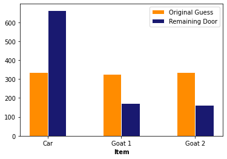
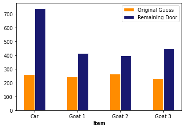

# Preamble script block to identify host, user, and kernel
import sys
! hostname
! whoami
print(sys.executable)
print(sys.version)
print(sys.version_info)
atomickitty
sensei
/opt/jupyterhub/bin/python3
3.8.5 (default, Jul 28 2020, 12:59:40)
[GCC 9.3.0]
sys.version_info(major=3, minor=8, micro=5, releaselevel='final', serial=0)
Full name:
R#:
HEX:
Title of the notebook
Date:
Lab9: Simulation
Example1: Simulate a game of Russian Roulette:
- For 2 rounds
- For 5 rounds
- For 10 rounds
import numpy as np #import numpy
revolver = np.array([1,0,0,0,0,0]) #create a numpy array with 1 bullet and 5 empty chambers
print(np.random.choice(revolver,2)) #randomly select a value from revolver - simulation
[0 0]
print(np.random.choice(revolver,5))
[0 0 0 1 1]
print(np.random.choice(revolver,10))
[0 0 0 0 0 0 0 0 0 0]
Exercise 1: Simulate the results of throwing a D6 (regular dice) for 10 times.
Example2: Assume the following rules:
-
If the dice shows 1 or 2 spots, my net gain is -1 dollar.
-
If the dice shows 3 or 4 spots, my net gain is 0 dollars.
-
If the dice shows 5 or 6 spots, my net gain is 1 dollar.
Define a function to simulate a game with the above rules, assuming a D6, and compute the net gain of the player over any given number of rolls.
Compute the net gain for 5, 50, and 500 rolls
def D6game(nrolls):
import numpy as np #import numpy
dice = np.array([1,2,3,4,5,6]) #create a numpy array with values of a D6
rolls = np.random.choice(dice,nrolls) #randomly selecting a value from dice for nrolls times- simulation
gainlist =[] #create an empty list for gains|losses
for i in np.arange(len(rolls)): #Apply the rules
if rolls[i]<=2:
gainlist.append(-1)
elif rolls[i]<=4:
gainlist.append(0)
elif rolls[i]<=6:
gainlist.append(+1)
return (np.sum(gainlist)) #sum up all gains|losses
# return (gainlist,"The net gain is equal to:",np.sum(gainlist))
D6game(5)
-2
D6game(50)
-4
D6game(500)
-16
Exercise2: Assume the following rules:
-
If the dice shows 1 or 2 spots, my net gain is (-2*value of dice) dollars.
-
If the dice shows 3 or 4 spots, my net gain is 1 dollars.
-
If the dice shows 5 spots, my net gain is (2*value of dice) dollars.
-
If the dice shows 6 spots, my net gain is -5 dollars.
Define a function to simulate a game with the above rules, assuming a D6, and compute the net gain of the player over any given number of rolls.
Compute the net gain for 5, 50, and 500 rolls
# Define the function
# Run for 5 rounds
# Run for 50 rounds
# Run for 500 rounds
Example3: Simulate Monty Hall Game for 1000 times. Use a barplot and discuss whether players are better off sticking to their initial choice, or switching doors?
def othergoat(x): #Define a function to return "the other goat"!
if x == "Goat 1":
return "Goat 2"
elif x == "Goat 2":
return "Goat 1"
Doors = np.array(["Car","Goat 1","Goat 2"]) #Define a list for objects behind the doors
goats = np.array(["Goat 1" , "Goat 2"]) #Define a list for goats!
def MHgame():
#Function to simulate the Monty Hall Game
#For each guess, return ["the guess","the revealed", "the remaining"]
userguess=np.random.choice(Doors) #randomly selects a door as userguess
if userguess == "Goat 1":
return [userguess, "Goat 2","Car"]
if userguess == "Goat 2":
return [userguess, "Goat 1","Car"]
if userguess == "Car":
revealed = np.random.choice(goats)
return [userguess, revealed,othergoat(revealed)]
# Check and see if the MHgame function is doing what it is supposed to do:
for i in np.arange(1):
a =MHgame()
print(a)
print(a[0])
print(a[1])
print(a[2])
['Goat 1', 'Goat 2', 'Car']
Goat 1
Goat 2
Car
c1 = [] #Create an empty list for the userguess
c2 = [] #Create an empty list for the revealed
c3 = [] #Create an empty list for the remaining
for i in np.arange(1000): #Simulate the game for 1000 rounds - or any other number of rounds you desire
game = MHgame()
c1.append(game[0]) #In each round, add the first element to the userguess list
c2.append(game[1]) #In each round, add the second element to the revealed list
c3.append(game[2]) #In each round, add the third element to the remaining list
import pandas as pd
#Create a data frame (gamedf) with 3 columns ("Guess","Revealed", "Remaining") and 1000 (or how many number of rounds) rows
gamedf = pd.DataFrame({'Guess':c1,
'Revealed':c2,
'Remaining':c3})
gamedf
| Guess | Revealed | Remaining | |
|---|---|---|---|
| 0 | Car | Goat 1 | Goat 2 |
| 1 | Car | Goat 2 | Goat 1 |
| 2 | Car | Goat 2 | Goat 1 |
| 3 | Goat 2 | Goat 1 | Car |
| 4 | Goat 2 | Goat 1 | Car |
| ... | ... | ... | ... |
| 995 | Car | Goat 2 | Goat 1 |
| 996 | Car | Goat 2 | Goat 1 |
| 997 | Goat 2 | Goat 1 | Car |
| 998 | Goat 2 | Goat 1 | Car |
| 999 | Goat 2 | Goat 1 | Car |
1000 rows × 3 columns
# Get the count of each item in the first and 3rd column
original_car =gamedf[gamedf.Guess == 'Car'].shape[0]
remaining_car =gamedf[gamedf.Remaining == 'Car'].shape[0]
original_g1 =gamedf[gamedf.Guess == 'Goat 1'].shape[0]
remaining_g1 =gamedf[gamedf.Remaining == 'Goat 1'].shape[0]
original_g2 =gamedf[gamedf.Guess == 'Goat 2'].shape[0]
remaining_g2 =gamedf[gamedf.Remaining == 'Goat 2'].shape[0]
# Let's plot a grouped barplot
import matplotlib.pyplot as plt
# set width of bar
barWidth = 0.25
# set height of bar
bars1 = [original_car,original_g1,original_g2]
bars2 = [remaining_car,remaining_g1,remaining_g2]
# Set position of bar on X axis
r1 = np.arange(len(bars1))
r2 = [x + barWidth for x in r1]
# Make the plot
plt.bar(r1, bars1, color='darkorange', width=barWidth, edgecolor='white', label='Original Guess')
plt.bar(r2, bars2, color='midnightblue', width=barWidth, edgecolor='white', label='Remaining Door')
# Add xticks on the middle of the group bars
plt.xlabel('Item', fontweight='bold')
plt.xticks([r + barWidth/2 for r in range(len(bars1))], ['Car', 'Goat 1', 'Goat 2'])
# Create legend & Show graphic
plt.legend()
plt.show()

According to the plot, it is statitically beneficial for the players to switch doors because the initial chance for being correct is only 1/3
Example4: What if there were 4 doors and 3 goats?
import numpy as np
import pandas as pd
import matplotlib.pyplot as plt
Doors = np.array(["Car","Goat 1","Goat 2","Goat 3"]) #Define a list for objects behind the doors
goats = np.array(["Goat 1" , "Goat 2","Goat 3"]) #Define a list for goats!
def othergoat12(x): #Define a function to return "the other goat"!
if x == "Goat 1":
return "Goat 2"
elif x == "Goat 2":
return "Goat 1"
def othergoat23(x): #Define a function to return "the other goat"!
if x == "Goat 2":
return "Goat 3"
elif x == "Goat 3":
return "Goat 2"
def othergoat13(x): #Define a function to return "the other goat"!
if x == "Goat 1":
return "Goat 3"
elif x == "Goat 3":
return "Goat 1"
#####################################
def othergoat123(x): #Define a function to return "the other goat"!
if x == "Goat 1":
return np.random.choice(["Goat 2","Goat 3"])
elif x == "Goat 2":
return np.random.choice(["Goat 1","Goat 3"])
elif x == "Goat 3":
return np.random.choice(["Goat 1","Goat 2"])
def MHgame():
#Function to simulate the Monty Hall Game
#For each guess, return ["the guess","the revealed", "unrevealed1", "unrevealed2"]
goats = np.array(["Goat 1" , "Goat 2","Goat 3"])
userguess=np.random.choice(Doors) #randomly selects a door as userguess
if userguess == "Goat 1": #If the user chooses Goat 1
revealed = np.random.choice(goats[np.arange(len(goats))!=0])
unrevealed1 = othergoat23(revealed)
unrevealed2 = "Car"
return [userguess, revealed,unrevealed1,unrevealed2]
if userguess == "Goat 2": #If the user chooses Goat 2
revealed = np.random.choice(goats[np.arange(len(goats))!=1])
unrevealed1 = othergoat13(revealed)
unrevealed2 = "Car"
return [userguess, revealed,unrevealed1,unrevealed2]
if userguess == "Goat 3": #If the user chooses Goat 3
revealed = np.random.choice(goats[np.arange(len(goats))!=2])
unrevealed1 = othergoat12(revealed)
unrevealed2 = "Car"
return [userguess, revealed,unrevealed1,unrevealed2]
if userguess == "Car": #If the user chooses Car
revealed = np.random.choice(goats)
newgoat = goats[goats != revealed]
unrevealed1 = newgoat[0]
unrevealed2 = newgoat[1]
return [userguess, revealed,unrevealed1,unrevealed2]
# Check and see if the MHgame function is doing what it is supposed to do:
for i in np.arange(1):
a =MHgame()
print(a)
print(a[0])
print(a[1])
print(a[2])
print(a[3])
['Car', 'Goat 1', 'Goat 2', 'Goat 3']
Car
Goat 1
Goat 2
Goat 3
c1 = [] #Create an empty list for the userguess
c2 = [] #Create an empty list for the revealed
c3 = [] #Create an empty list for the remaining1
c4 = [] #Create an empty list for the remaining2
for i in np.arange(1000): #Simulate the game for 1000 rounds - or any other number of rounds you desire
game = MHgame()
c1.append(game[0]) #In each round, add the first element to the userguess list
c2.append(game[1]) #In each round, add the second element to the revealed list
c3.append(game[2]) #In each round, add the third element to the remaining list1
c4.append(game[3]) #In each round, add the fourth element to the remaining list2
import pandas as pd
#Create a data frame (gamedf) with 3 columns ("Guess","Revealed", "Remaining") and 1000 (or how many number of rounds) rows
gamedf = pd.DataFrame({'Guess':c1,
'Revealed':c2,
'Remaining1':c3,
'Remaining2':c4})
gamedf
| Guess | Revealed | Remaining1 | Remaining2 | |
|---|---|---|---|---|
| 0 | Goat 3 | Goat 2 | Goat 1 | Car |
| 1 | Goat 3 | Goat 2 | Goat 1 | Car |
| 2 | Goat 1 | Goat 3 | Goat 2 | Car |
| 3 | Goat 1 | Goat 2 | Goat 3 | Car |
| 4 | Goat 2 | Goat 1 | Goat 3 | Car |
| ... | ... | ... | ... | ... |
| 995 | Goat 1 | Goat 2 | Goat 3 | Car |
| 996 | Car | Goat 1 | Goat 2 | Goat 3 |
| 997 | Goat 2 | Goat 1 | Goat 3 | Car |
| 998 | Goat 3 | Goat 1 | Goat 2 | Car |
| 999 | Goat 2 | Goat 1 | Goat 3 | Car |
1000 rows × 4 columns
# Get the count of each item in the first and (3rd+4th) column
original_car =gamedf[gamedf.Guess == 'Car'].shape[0]
remaining_car =gamedf[gamedf.Remaining1 == 'Car'].shape[0] + gamedf[gamedf.Remaining2 == 'Car'].shape[0]
original_g1 =gamedf[gamedf.Guess == 'Goat 1'].shape[0]
remaining_g1 =gamedf[gamedf.Remaining1 == 'Goat 1'].shape[0] + gamedf[gamedf.Remaining2 == 'Goat 1'].shape[0]
original_g2 =gamedf[gamedf.Guess == 'Goat 2'].shape[0]
remaining_g2 =gamedf[gamedf.Remaining1 == 'Goat 2'].shape[0] + gamedf[gamedf.Remaining2 == 'Goat 2'].shape[0]
original_g3 =gamedf[gamedf.Guess == 'Goat 3'].shape[0]
remaining_g3 =gamedf[gamedf.Remaining1 == 'Goat 3'].shape[0] + gamedf[gamedf.Remaining2 == 'Goat 3'].shape[0]
# Let's plot a grouped barplot
import matplotlib.pyplot as plt
# set width of bar
barWidth = 0.25
# set height of bar
bars1 = [original_car,original_g1,original_g2,original_g3]
bars2 = [remaining_car,remaining_g1,remaining_g2,remaining_g3]
# Set position of bar on X axis
r1 = np.arange(len(bars1))
r2 = [x + barWidth for x in r1]
# Make the plot
plt.bar(r1, bars1, color='darkorange', width=barWidth, edgecolor='white', label='Original Guess')
plt.bar(r2, bars2, color='midnightblue', width=barWidth, edgecolor='white', label='Remaining Door')
# Add xticks on the middle of the group bars
plt.xlabel('Item', fontweight='bold')
plt.xticks([r + barWidth/2 for r in range(len(bars1))], ['Car', 'Goat 1', 'Goat 2','Goat 3'])
# Create legend & Show graphic
plt.legend()
plt.show()

Comparison of the plots show that as the number of doors (and goats) increases, it makes even more sense to switch!
Exercise3: Run the modified Monty Hall game for 10,100, and 1000 rounds. Show the bar plots for each series and explain the difference.
#Define necessary functions
#Run and plot for 10 rounds
#Run and plot for 100 rounds
#Run and plot for 1000 rounds